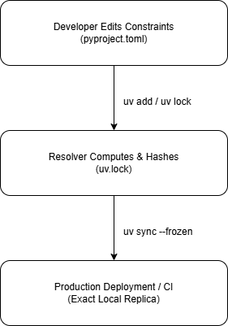

Packaging Architecture
All contents here are generated by Gemini.
Evolution of Python Tooling
The Legacy Era
requirements.txt
- Historically,
pipintroducedrequirements.txtas a flat list of dependencies. - It was designed for environment reproduction rather than package metadata.
Architectural Limitations:
- No Transitive Dependency Resolution:
- Installing requests also installs its dependencies (like
urllib3,certifi,idna). - Freezing this environment via
pip freeze > requirements.txtmixes direct dependencies with sub-dependencies, masking top-level intent.
- Installing requests also installs its dependencies (like
- No Multi-Environment Standards:
- To separate development or testing libraries from production code, projects had to maintain arbitrary naming conventions like
requirements-dev.txtorrequirements-test.txt.
- To separate development or testing libraries from production code, projects had to maintain arbitrary naming conventions like
- No Metadata Capabilities:
- It cannot describe package names, version constraints for the Python runtime itself, entry points, or build systems.
Sample:
setup.py and setup.cfg
- To build and distribute software, Python traditionally relied on
distutilsand latersetuptools. - Package definitions were written in executable Python code via
setup.py.
Architectural Limitations:
- The "Catch-22" Execution Problem:
- To read project metadata, a package manager had to execute
setup.py. - If
setup.pydepended on an uninstalled build-time package (e.g.,Cythonornumpy), the setup script would crash before the dependencies could even be parsed or installed.
- To read project metadata, a package manager had to execute
- Arbitrary Code Execution:
- Parsing project metadata required executing untrusted Python code during the resolution phase.
- Tool Coupling:
- The entire ecosystem was coupled directly to
setuptools. - Replacing
setuptoolswith alternative build engines required complex workarounds.
- The entire ecosystem was coupled directly to
Sample:
The Bridge: pip-tools and Deterministic Builds
- To solve the dependency drift problem caused by
requirements.txt,pip-toolsintroduced two distinct files. requirements.in: Contains abstract, high-level direct dependencies.requirements.txt: Serves as a generated lockfile with exact pins and hashes.- Running
pip-compileresolves top-level dependencies, pin exact versions, and emits deterministic sub-dependencies. - While this brought lockfile capabilities to standard
pipworkflows, configuration sprawl remained high, requiring separate files for metadata (setup.py), linter configurations (.flake8,pytest.ini), and dependencies (requirements.in).
Sample:
The Modern Standard: The Python Enhancement Proposals (PEPs)
- The Python Packaging Authority (PyPA) introduced a unified framework through three foundational PEPs.
-
PEP 518: Declarative Build Requirements
- This established
pyproject.tomlas the universal configuration file using the TOML format. - It solves the execution "Catch-22" by introducing the
[build-system]table. - Recommended Practice:
- Always declare
[build-system]. - This allows installers to create an isolated temporary environment containing only the declared build backend before triggering package operations.
- Always declare
- This established
-
PEP 517: Frontend & Backend Separation
- This decoupled the tool running the build (the Build Frontend, e.g.,
pip,uv,build) from the tool creating the distribution artifacts (the Build Backend, e.g.,hatchling,flit-core,setuptools,maturin). - Frontends and backends communicate through a standardized hook interface (such as
build_wheelorbuild_sdist).
- This decoupled the tool running the build (the Build Frontend, e.g.,
-
PEP 621: Standardized Project Metadata
- This unified static project metadata under the
[project]table. - Regardless of the chosen build backend, metadata is now declared using standard schema fields.
- This unified static project metadata under the
Structural Specifications of Modern Packaging
Anatomy of a pyproject.toml File
Consolidated Tooling Footprint
- Beyond build information and project metadata,
pyproject.tomlserves as a unified configuration location for modern Python code-quality tools.
Dependency Graph Mechanics & Locking
Abstract Rules vs. Concrete Pins (Direct vs. Transitive Dependencies)
- Direct dependencies are the libraries the source code imports directly.
- They represent top-level intent and are declared as abstract rules (ranges) inside
pyproject.toml. - Abstract rules express intent and compatibility constraints rather than exact releases.
- Allowing version bounds (
>=,<) enables the resolver to safely upgrade sub-dependencies when security patches are published. - When a project explicitly depends on a library (e.g.,
fastapi), that library declares its own dependencies (e.g.,pydantic,starlette), which in turn declare lower-level requirements (typing-extensions,idna). These are Transitive Dependencies. - This chain forms a Directed Acyclic Graph (DAG) of transitive dependencies.
- If direct dependencies are declared with flexible ranges (
fastapi>=0.110.0) without a lockfile, runningpip installon two different days (or machines) will pull down different sub-dependency versions, introducing non-deterministic bugs. - A lockfile is a fully resolved, machine-generated inventory recording exact versions, download URLs, and cryptographic hashes for every node in the dependency graph.
- To ensure deployment parity between local development and production environments, builds must be configured to install directly from the lockfile without running re-resolution routines.
Mechanics of Resolution & Cryptographic Lockfiles
- Dependency resolution is the process of resolving a complete, non-conflicting Directed Acyclic Graph (DAG) from abstract rules.
- Modern resolvers (like
uvorpoetry) use advanced algorithms such as PubGrub (a version solver based on Boolean Satisfiability / SAT solvers). - The solver backtracks up the decision tree to find a combination of versions where every package requirement is satisfied simultaneously.
- Once the graph is resolved, the package manager writes a lockfile.
- Lockfiles do not merely record version numbers; they record cryptographic hashes (SHA-256) for every artifact published to PyPI.
- Why Cryptographic Hashes are Mandatory?
- Prevention of Dependency Confusion / Tampering: Guarantees that the code downloaded in CI/CD is byte-for-byte identical to the code vetted locally, protecting against compromised upstream repositories.
- Hermetic Environment Creation: Prevents broken network caches or intercepted mirrors from injecting modified wheels into build pipelines.
Anatomy and Breakdown of a Lockfile (uv.lock)
Modern Dependency Workflows & Deterministic Builds

- Declare top-level intent:
- Add dependencies directly inside
pyproject.toml. - Or, run installation command, e.g.
uv add "httpx>=0.27.0".
- Add dependencies directly inside
- Resolve and generate lockfile:
- Project management tools (
uv,poetry,pdm) resolve exact sub-dependency versions and record them in a tool-managed lockfile (such asuv.lockorpoetry.lock).
- Project management tools (
- Install exact environment:
- The project management tool reads the lockfile and installs the exact dependency graph.
- With
uv:uv sync --frozen.
| Operational Step | Legacy Workflow (pip) |
Modern Workflow (uv example) |
|---|---|---|
| Declare top-level dependencies | Hand-edit requirements.txt or requirements.in |
uv add requests (updates pyproject.toml) |
| Lock exact dependency graph | pip freeze > requirements.txt or pip-compile |
uv lock (creates uv.lock) |
| Install project & locked packages | pip install -r requirements.txt |
uv sync |